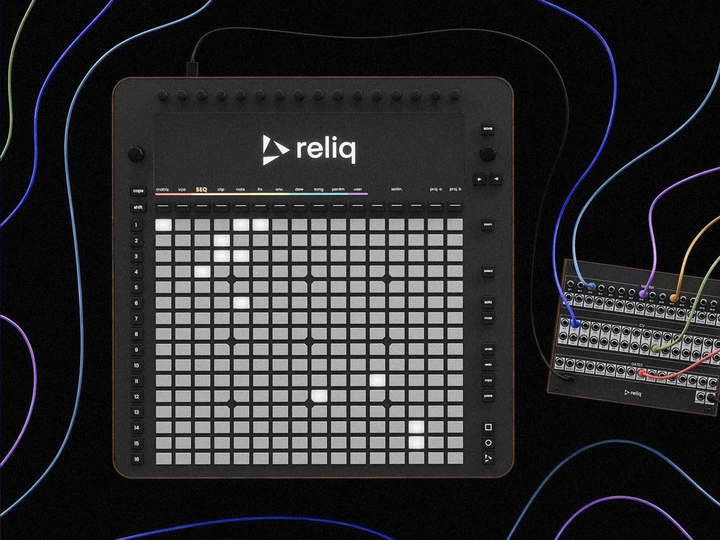
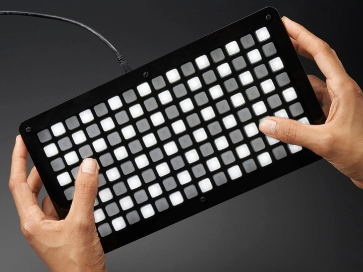
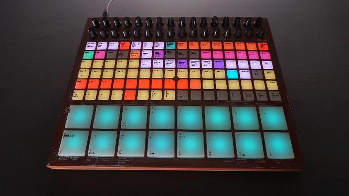
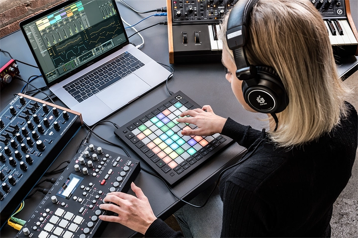

Grid Controller – Nhạc Cụ Điện Tử Hiện Đại Cho Producer & DJ
Trong thế giới nhạc điện tử hiện đại, việc sáng tác và trình diễn nhạc số không còn gói gọn trong các nhạc cụ truyền thống như piano hay guitar. Công nghệ đã tạo ra những công cụ âm nhạc hoàn toàn mới, cho phép người chơi tạo ra âm thanh, hợp âm, nhịp điệu hay các mẫu nhạc chỉ bằng một thao tác đơn giản. Một trong những nhạc cụ nổi bật nhất chính là Grid Controller – thiết bị được ưa chuộng bởi các producer, DJ và nghệ sĩ biểu diễn live trên khắp thế giới. Với thiết kế trực quan, khả năng trigger sample nhanh chóng và tích hợp mạnh mẽ với phần mềm DAW, Grid Controller đã mở ra một kỷ nguyên sáng tạo âm nhạc hiện đại, nơi ranh giới giữa nhạc sĩ và công nghệ gần như biến mất.
1. Grid Controller là gì?
Grid Controller là một loại nhạc cụ điện tử hiện đại dưới dạng bảng nút bấm, cho phép người chơi tạo ra âm thanh, hợp âm, nhịp điệu hoặc các mẫu nhạc (sample) chỉ bằng một thao tác nhấn nút. Không giống nhạc cụ truyền thống, Grid Controller mang đến khả năng sáng tác và trình diễn trực tiếp mà không cần kiến thức lý thuyết âm nhạc quá phức tạp.
Thiết kế trực quan của Grid Controller cho phép người chơi nhìn thấy rõ vị trí các pad, màu sắc LED báo trạng thái, từ đó dễ dàng trigger mẫu nhạc, hợp âm hoặc nhịp điệu theo ý muốn. Đây là công cụ lý tưởng cho producer nhạc điện tử, DJ và nghệ sĩ live, nơi việc phản ứng nhanh, sáng tạo và tương tác trực tiếp với âm thanh là yếu tố quan trọng nhất.

Nhờ Grid Controller, một người mới học cũng có thể tạo ra những giai điệu phức tạp, những loop nhịp nhàng hay thậm chí cả những hợp âm đầy đủ chỉ với một vài nút nhấn, biến mọi ý tưởng âm nhạc thành hiện thực chỉ trong vài giây.
2. Lịch sử phát triển của Grid Controller
Grid Controller xuất hiện từ đầu những năm 2000, đúng vào thời điểm nhạc điện tử EDM bắt đầu bùng nổ trên toàn cầu, kéo theo nhu cầu sáng tác và biểu diễn nhạc số tăng mạnh. Trước khi có Grid Controller, việc trigger sample hay loop thường yêu cầu thao tác phức tạp trên phần mềm máy tính, đòi hỏi người chơi phải am hiểu DAW và kỹ thuật lập trình MIDI. Sự ra đời của Monome 40h đã mở ra một kỷ nguyên hoàn toàn mới: với một bảng nút bấm đơn giản nhưng trực quan, người chơi có thể thực hiện các mẫu nhạc, hợp âm hay loop ngay lập tức, phản ứng nhanh với nhịp điệu và ý tưởng sáng tác mà không cần phải nhìn màn hình hay thao tác phức tạp. Điều này giúp việc biểu diễn live trở nên tương tác, sinh động và sáng tạo hơn, đồng thời rút ngắn khoảng cách giữa người chơi và công nghệ nhạc số.
Trong những năm tiếp theo, nhiều model tiên tiến ra đời, chẳng hạn như Ableton Push, Novation Launchpad hay Akai APC40, nâng tầm khả năng của Grid Controller lên một bước mới. Những thiết bị này không chỉ cung cấp khả năng trigger sample và loop, mà còn tích hợp arpeggiator, auto-chord, khả năng lập trình pad tùy chỉnh và hệ thống LED hiển thị trực quan, giúp người chơi dễ dàng nhận biết trạng thái nhạc cụ, nhịp điệu hay hợp âm đang hoạt động. Nhờ đó, Grid Controller trở thành một công cụ vừa sáng tạo trong studio, vừa đầy năng lượng trên sân khấu live, tạo ra trải nghiệm âm nhạc trực quan, bắt mắt và chuyên nghiệp.
Nhờ sự phát triển không ngừng về tính năng, thiết kế và khả năng tích hợp với các DAW phổ biến như Ableton Live, Logic Pro hay FL Studio, Grid Controller ngày càng trở nên linh hoạt, mạnh mẽ và phổ biến, đáp ứng nhu cầu từ người mới học đến các producer nhạc điện tử chuyên nghiệp trên toàn thế giới. Đây chính là nhạc cụ mở ra một kỷ nguyên mới trong âm nhạc điện tử, nơi ranh giới giữa sáng tác, biểu diễn và công nghệ gần như biến mất, giúp mọi ý tưởng âm nhạc đều có thể trở thành hiện thực ngay tức thì.
3. Cấu tạo và thiết kế của Grid Controller
Một Grid Controller điển hình không chỉ là một bảng nút bấm đơn giản, mà là một hệ thống nhạc cụ điện tử tinh vi, được thiết kế để tối ưu hóa khả năng sáng tạo âm nhạc. Các thành phần chính bao gồm:
-
Bảng nút bấm (pads): Kích thước và số lượng pad đa dạng, từ các lưới 8x8 truyền thống đến 16x16 hoặc các mô-đun mở rộng có thể ghép nối. Mỗi pad được lập trình để trigger sample, hợp âm, loop hoặc hiệu ứng âm thanh. Một số pad còn hỗ trợ cảm ứng đa điểm, nhạy với lực nhấn, giúp âm thanh thay đổi theo lực tay, tạo cảm giác chơi nhạc tự nhiên hơn.
-
LED feedback: Hệ thống LED trực quan giúp hiển thị trạng thái pad đang được kích hoạt, hợp âm nào đang phát, nhịp điệu hiện tại hay chế độ arpeggiator đang hoạt động. Các màu sắc và hiệu ứng ánh sáng không chỉ hữu ích về mặt kỹ thuật mà còn tạo trải nghiệm trực quan, sinh động cho cả người chơi và khán giả.
-
Các nút chức năng bổ sung: Grid Controller thường đi kèm với các nút điều chỉnh âm lượng, chọn kênh, thay đổi mẫu nhạc, kích hoạt arpeggiator, bật/tắt auto-chord, và các chức năng hiệu ứng khác. Những nút này giúp người chơi tối ưu hóa thao tác mà không cần phải thao tác trên máy tính liên tục, tạo sự liền mạch trong sáng tác và biểu diễn live.

Thiết kế tổng thể của Grid Controller hướng tới sự trực quan và linh hoạt, cho phép người chơi dễ dàng lập trình, trigger nhạc và sáng tạo các giai điệu phức tạp ngay trên bảng pad, mà vẫn giữ được trải nghiệm nhạc sống động và trực quan như chơi nhạc cụ truyền thống.
4. Cách hoạt động của Grid Controller
Grid Controller thường không phát âm thanh trực tiếp mà hoạt động như trung tâm điều khiển MIDI, kết nối với máy tính hoặc DAW (Digital Audio Workstation). Khi người chơi nhấn pad:
-
Gửi tín hiệu MIDI: Mỗi lần nhấn pad, Grid Controller gửi tín hiệu MIDI đến DAW hoặc thiết bị synthesizer, nơi tín hiệu được chuyển thành âm thanh cụ thể.
-
Trigger sample và loop: Pad có thể phát ra các mẫu âm thanh sẵn có, hợp âm đầy đủ, hoặc tạo loop liên tục theo nhịp điệu đã lập trình.
-
Kích hoạt hiệu ứng âm thanh: Một số pad có thể được lập trình để điều khiển hiệu ứng như reverb, delay, filter, hoặc modulation, giúp âm thanh trở nên phong phú và sống động.
-
Sử dụng arpeggiator và auto-chord: Người chơi có thể nhấn một nốt duy nhất và Grid Controller sẽ phát ra hợp âm hoàn chỉnh hoặc tạo ra chuỗi nhịp điệu liên tục, giúp biểu diễn trực tiếp trở nên dễ dàng và đầy năng lượng.
Nhờ cơ chế hoạt động này, Grid Controller trở thành cầu nối giữa ý tưởng âm nhạc và thực tế, cho phép người chơi nhanh chóng thử nghiệm các giai điệu, phối hợp nhịp điệu và trình diễn live một cách linh hoạt, giống như một trình DJ hay producer chuyên nghiệp.
5. Các tính năng nổi bật
Các tính năng của Grid Controller chính là yếu tố giúp nó trở thành công cụ sáng tạo không giới hạn:
-
Auto-chord / Smart chord: Một tính năng nổi bật, giúp người chơi nhấn một pad là có thể phát ra cả hợp âm hoàn chỉnh, không cần chơi từng nốt. Điều này đặc biệt hữu ích cho các performer live hoặc những người chưa thành thạo nhạc lý.
-
Arpeggiator: Tạo ra nhịp điệu liên tục từ một nốt nhấn duy nhất, làm âm nhạc trở nên sống động, phong phú và có thể kết hợp với các hiệu ứng khác.
-
Custom pad mapping: Người dùng có thể lập trình từng pad cho mẫu âm thanh riêng, từ trống, bass, hợp âm đến các hiệu ứng đặc biệt, giúp xây dựng một bộ nhạc cá nhân hóa hoàn toàn.
-
LED feedback trực quan: Giúp nhận biết trạng thái pad, nhịp điệu, hợp âm đang hoạt động, từ đó biểu diễn trực tiếp trở nên trực quan, hấp dẫn và bắt mắt.
-
Trigger sample và loop linh hoạt: Pad có thể phát ra nhiều mẫu âm thanh đồng thời, cho phép người chơi layer nhạc, phối hợp các hiệu ứng và xây dựng giai điệu phức tạp ngay lập tức.
Những tính năng này giúp Grid Controller không chỉ là nhạc cụ để chơi nhạc mà còn là trung tâm sáng tạo, mở ra những cơ hội mới trong sản xuất nhạc điện tử, từ studio đến sân khấu live, từ thử nghiệm sáng tạo đến biểu diễn chuyên nghiệp.
6. Ưu điểm của Grid Controller
Grid Controller sở hữu nhiều ưu điểm vượt trội khiến nó trở thành nhạc cụ được yêu thích trong nhạc điện tử hiện đại:
-
Dễ học và trực quan: Người mới bắt đầu có thể chơi nhạc ngay lập tức mà không cần kiến thức lý thuyết phức tạp. Hệ thống LED hiển thị trực quan giúp nhận biết pad nào đang được kích hoạt, hợp âm nào đang phát và nhịp điệu hiện tại.
-
Tạo nhạc nhanh và hiệu quả: Chỉ với vài thao tác nhấn pad, người chơi có thể trigger loop, hợp âm, nhịp trống hoặc hiệu ứng âm thanh, biến mọi ý tưởng âm nhạc thành hiện thực ngay tức thì.
-
Thích hợp cho biểu diễn live: Với phản hồi nhanh, LED feedback sinh động và khả năng arpeggiator, Grid Controller giúp biểu diễn trực tiếp trở nên sôi động, sáng tạo và đầy năng lượng.
-
Tích hợp dễ dàng với DAW: Hầu hết Grid Controller tương thích với các phần mềm phổ biến như Ableton Live, Logic Pro hay FL Studio, giúp người chơi điều khiển nhạc cụ, lập trình sample và phối hợp các hiệu ứng một cách mượt mà.
-
Linh hoạt trong sáng tạo âm nhạc: Grid Controller không chỉ giới hạn ở nhạc EDM; người chơi có thể sử dụng nó để sáng tác hip-hop, nhạc phim, ambient hoặc bất cứ thể loại nhạc điện tử nào, từ thử nghiệm đến sản xuất chuyên nghiệp.
Nhờ những ưu điểm này, Grid Controller trở thành trung tâm sáng tạo âm nhạc hiện đại, nơi mà khả năng biểu diễn, thử nghiệm và sản xuất hòa quyện một cách liền mạch.
7. Hạn chế và lưu ý khi sử dụng
Mặc dù mang lại nhiều lợi ích, Grid Controller cũng có một số hạn chế và điều cần lưu ý:
-
Phụ thuộc vào phần mềm/DAW: Hầu hết các model hiện nay không phát âm thanh độc lập, vì vậy cần kết nối với máy tính hoặc thiết bị synth để tạo âm thanh.
-
Không phải nhạc cụ acoustic: Âm thanh tạo ra hoàn toàn bằng kỹ thuật số, trải nghiệm khác với nhạc cụ truyền thống như piano hay guitar.
-
Cần luyện tập để thành thạo: Để khai thác tối đa các tính năng như auto-chord, arpeggiator hay custom pad mapping, người chơi cần thời gian làm quen và thực hành thường xuyên.
-
Yêu cầu thiết bị và kết nối: Cần nguồn điện, cáp USB/MIDI và đôi khi là các thiết bị ngoại vi khác, điều này cần chuẩn bị kỹ lưỡng cho live performance hoặc studio di động.
-
Giới hạn kích thước và số lượng pad: Một số model nhỏ gọn có thể hạn chế số lượng sample hoặc hợp âm có thể trigger cùng lúc, vì vậy người dùng cần cân nhắc chọn model phù hợp với nhu cầu.

Hiểu rõ những hạn chế này sẽ giúp người chơi tối ưu hóa trải nghiệm, tránh gián đoạn trong biểu diễn và nâng cao hiệu quả sáng tác.
8. Các thương hiệu và mẫu phổ biến
Trên thị trường hiện nay có nhiều Grid Controller nổi bật, từ thiết bị dành cho người mới học đến model chuyên nghiệp:
-
Ableton Push: Thiết kế tối ưu cho Ableton Live, hỗ trợ arpeggiator, auto-chord, lập trình pad và trigger sample mạnh mẽ, thích hợp cho cả studio và live performance.
-
Novation Launchpad: LED mạnh mẽ, dễ trigger loop, pad đa năng, hỗ trợ biểu diễn trực tiếp và sáng tác nhạc nhanh chóng.
-
Akai APC40: Chuyên nghiệp cho DJ và producer, tích hợp trực tiếp với DAW, khả năng trigger sample và hiệu ứng linh hoạt.
-
Monome Series: Nổi bật với khả năng lập trình pad mở rộng, hỗ trợ sáng tạo không giới hạn và thường được các producer thử nghiệm sáng tạo, biểu diễn live sử dụng.
Mỗi model đều có đặc điểm, tính năng và mức giá khác nhau, giúp người chơi từ mới học đến chuyên nghiệp có thể lựa chọn phù hợp với nhu cầu sáng tạo và biểu diễn của mình.
Tại Việt Nam, bạn có thể tìm mua Grid Controller tại các cửa hàng nhạc cụ chuyên về thiết bị điện tử như Nhạc Cụ Tiến Mạnh ở Hà Nội. Một số cửa hàng ở TP. Hồ Chí Minh và các thành phố lớn cũng có bán các model phổ biến như Ableton Push, Novation Launchpad hay Akai APC40. Trước khi mua, nên gọi điện kiểm tra hàng sẵn có và khả năng kết nối với phần mềm DAW mà bạn sử dụng.
9. Ứng dụng trong sản xuất nhạc điện tử hiện đại
Grid Controller được ứng dụng rộng rãi trong nhiều lĩnh vực:
-
EDM, Trance, House: Trigger loop, tạo nhịp điệu mạnh mẽ, biểu diễn live trên sân khấu festival hoặc club.
-
Hip-hop / Beat-making: Lập trình drum, bassline, sample nhanh, tiết kiệm thời gian sáng tác và thử nghiệm âm thanh.
-
Nhạc phim, ambient và experimental: Tạo các hiệu ứng âm thanh độc đáo, không gian nhạc phong phú, phục vụ sản xuất phim, video game hoặc nghệ thuật trình diễn.
-
Biểu diễn live: Grid Controller cho phép nghệ sĩ kết hợp nhiều hiệu ứng, trigger pad, arpeggiator, tạo trải nghiệm âm nhạc tương tác và hấp dẫn trước khán giả.

Các producer nổi tiếng như Alan Walker, Deadmau5, Martin Garrix đều sử dụng Grid Controller kết hợp với DAW để tạo nhạc, biểu diễn live hoặc thử nghiệm sáng tạo, chứng minh sức mạnh của thiết bị trong âm nhạc điện tử hiện đại.
10. Tương lai của Grid Controller và nhạc cụ điện tử
Trong tương lai, Grid Controller hứa hẹn sẽ trở thành trung tâm sáng tạo âm nhạc không thể thiếu:
-
Tích hợp AI: Hỗ trợ gợi ý hợp âm, loop, hoặc tự động sáng tác nhạc theo phong cách người dùng, giúp tiết kiệm thời gian và nâng cao hiệu quả sáng tác.
-
Cảm ứng đa điểm và kết nối không dây: Pad đa cảm ứng, kết nối Bluetooth/Wi-Fi, thuận tiện cho live performance hoặc studio di động.
-
Khả năng mở rộng: Hỗ trợ nhiều mẫu âm thanh, plugin và kết nối cloud, giúp chia sẻ dự án hoặc phối hợp sáng tác từ xa dễ dàng.
-
Ứng dụng giáo dục và trình diễn: Trở thành công cụ giảng dạy trực quan, giúp học viên hiểu nhạc lý và thực hành ngay trên pad, đồng thời nâng cao trải nghiệm live performance.
Nhờ những cải tiến liên tục này, Grid Controller không chỉ là nhạc cụ điện tử mà còn là trung tâm sáng tạo, thử nghiệm và biểu diễn cho các producer, DJ và nghệ sĩ live hiện đại.
Kết luận
Grid Controller là nhạc cụ điện tử hiện đại, linh hoạt và sáng tạo, giúp người chơi dễ dàng sáng tác, trigger hợp âm, tạo nhịp điệu và biểu diễn live. Với khả năng mở rộng, LED trực quan, arpeggiator và auto-chord, Grid Controller là trung tâm sáng tạo âm nhạc hiện đại, nơi ý tưởng được biến thành âm thanh một cách nhanh chóng, trực quan và đầy cảm hứng.